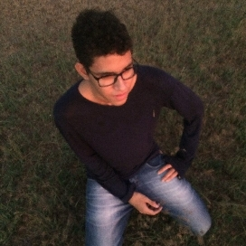

Josivaldo Junior
estudante curioso e dedicado
Jogador de Xadrez nato, gato e sedutor. Tranquilo, amigo e namorador.

Luiz Felipe
estudante lindo e gostoso!
Jogador de Xadrez Capivara, porém também gato e sedutor. Agitado, carinhoso e louco.